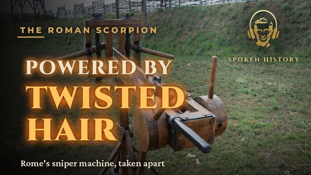

Topic
Gallic War
2 episodes on Gallic War: The Roman Pilum: Why the Javelin Bent; The Roman Scorpion: Rome's Sniper Weapon.

The Roman Pilum: Why the Javelin Bent
Was the Roman pilum designed to bend? Caesar reports the iron bent in the Helvetii's shields in 58 B.C. but not why; Polybius gives the famous bending javelin to the light troops and says...
Read the story
The Roman Scorpion: Rome's Sniper Weapon
A Gaulish warrior on a burning wall is hit by a bolt from a machine he never saw. The Roman scorpion was a torsion bolt-shooter powered by twisted sinew and hair. How it worked, who built...
Read the story